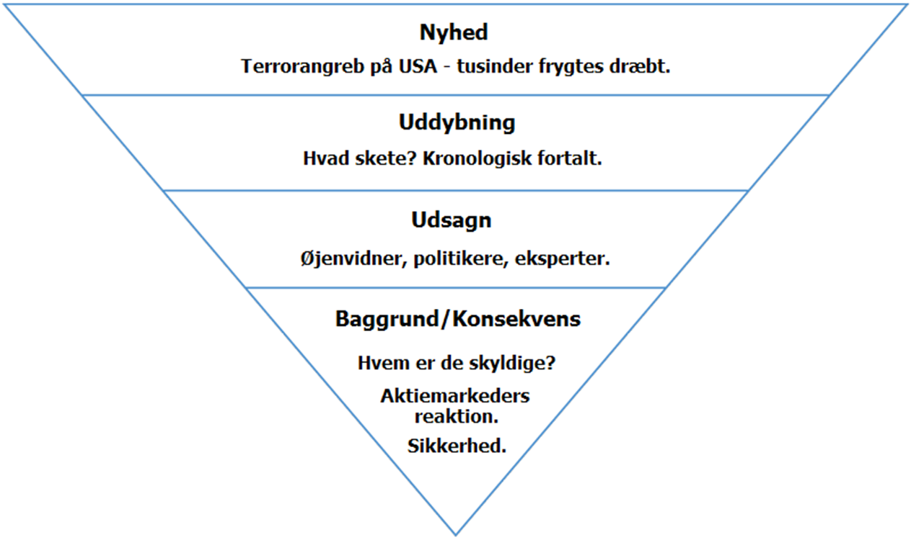

Nyhedskriterier
Væsentlighed, dvs. noget der har grundlæggende betydning eller konsekvens for mange mennesker.
Ex: Skatter stiger næste år.
Aktualitet, dsv. noget der er oppe i tiden.
Historien må gerne udspringe af stof som i forvejen cirkulerer i andre medier. Langt de fleste nyheder udspringer af dette nyhedskrierium.
Ex: Et parti vælger ny formand eller et containerskib er sejlet ind i en bro.
Identifikation, dvs. noget som læseren kan genkende sig selv i. En historie, der får læseren til at tænke "Det kunne være mig", "Bare det var mig" eller "Godt, det ikke er mig".
Ex: Ni ud af ti danskere spiser for meget sukker.
Sensation, dvs. noget der fascinerer eller chokerer. Ofte de små, skæve historier i nogle aviser, som kan være forsidehistorier i andre aviser.
Ex: Mand bider hund eller Kvinde overlevede en måned under sammenstyrtet hus.
Konflikt, dvs. når sager eller personer er på kollisionskurs.
Ex: Vred far anklager kommune for sjusk.
Proces til forståelse:
- Scanning
- Skimming
- Læsning
- Checking
Påstanden består af få elementer. Argumentationen kan bestå af mange.
EXORDIUM ELEMENTER = Påstandens elementer - slaæ ses først.
CORPUS ELEMENTER = argumenterne - skal ses bagefter.
Fundamentet for et godt website er at der skal være et klart defineret formål.
En godt webtekst hjælper altid sin læser videre.
En god webtekst videreformidler ikke bare en historie.
En god webtekst hjælper læseren med at træffe beslutninger.
En god webtekst tænker i SEO fra start til slut.
7 geniale genveje:
1. Gode overskrifter
2. Et par linjers resume
3. Afsnit med underoverskrifter
4. Kun en ide / et emne for hvert afsnit
5. Fremhævninger af nøgleord
6. Punktopstillinger
7. Meningsfulde links
Skriv aktivt
Skriv konkret
Skriv kort
Skriv, som du taler